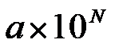
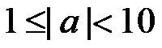
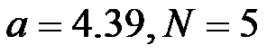
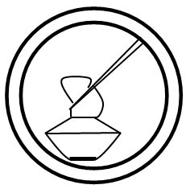
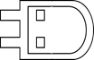
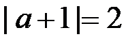
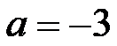
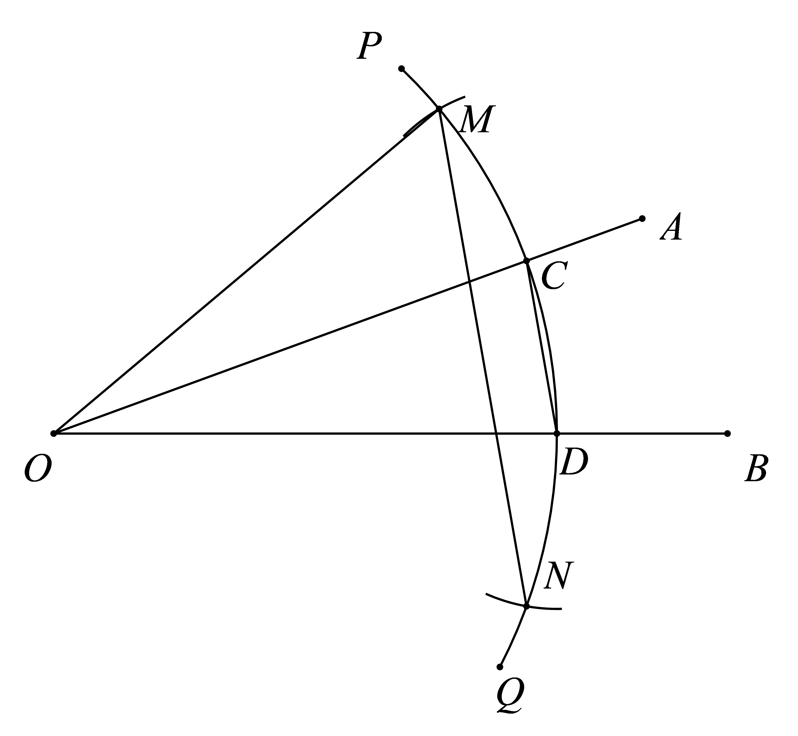
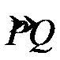
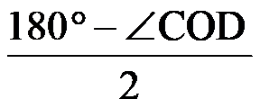

2019年北京市中考数学试题 · 选择题 第1、2、3、4、5题 · 对应解析
1．4月24日是中国航天日，1970年的这一天，我国自行设计、制造的第一颗人造地球卫星“东方红一号”成功发射，标志着中国从此进入了太空时代，它的运行轨道，距地球最近点439 000米．将439 000用科学记数法表示应为（）
A.0.439×106 B.4.39×106C.4.39×105D.139×103
【解析】本题考察科学记数法较大数，

中要求
，此题中
，故选C2．下列倡导节约的图案中，是轴对称图形的是（）


A. B. C. D.
【解析】本题考察轴对称图形的概念，故选C
3．正十边形的外角和为（）
A.180°B.360°C.720°D.1440°
【解析】多边形的外角和是一个定值360°，故选B
4．在数轴上，点A，B在原点O的两侧，分别表示数a，2，将点A向右平移1个单位长度，得到点C．若CO=BO，则a的值为（）
A.-3B.-2C.-1D.1
【解析】本题考察数轴上的点的平移及绝对值的几何意义.点A表示数为a，点B表示数为2，点C表示数为a+1，由题意可知，a＜0，∵CO=BO，∴

，解得 （舍）或
（舍）或
，故选A5．已知锐角∠AOB

如图，（1）在射线OA上取一点C，以点O为圆心，OC长为半径作
，交射线OB于点D，连接CD；（2）分别以点C，D为圆心，CD长为半径作弧，交于点M，N；
（3）连接OM，MN．
根据以上作图过程及所作图形，下列结论中错误的是（）
A.∠COM=∠CODB.若OM=MN，则∠AOB=20°
C.MN∥CDD.MN=3CD
【解析】连接ON，由作图可知△COM≌△DON.
A. 由△COM≌△DON.，可得∠COM=∠COD，故A正确.
B. 若OM=MN，则△OMN为等边三角形，由全等可知∠COM=∠COD=∠DON=20°，故B正确
C.由题意，OC=OD，∴∠OCD=

.设OC与OD与MN分别交于R，S，易证△MOR≌△NOS，则OR=OS，∴∠ORS=，∴∠OCD=∠ORS.∴MN∥CD，故C正确.D.由题意，易证MC=CD=DN，∴MC+CD+DN=3CD.∵两点之间线段最短.∴MN＜MC+CD+DN=3CD，故选D